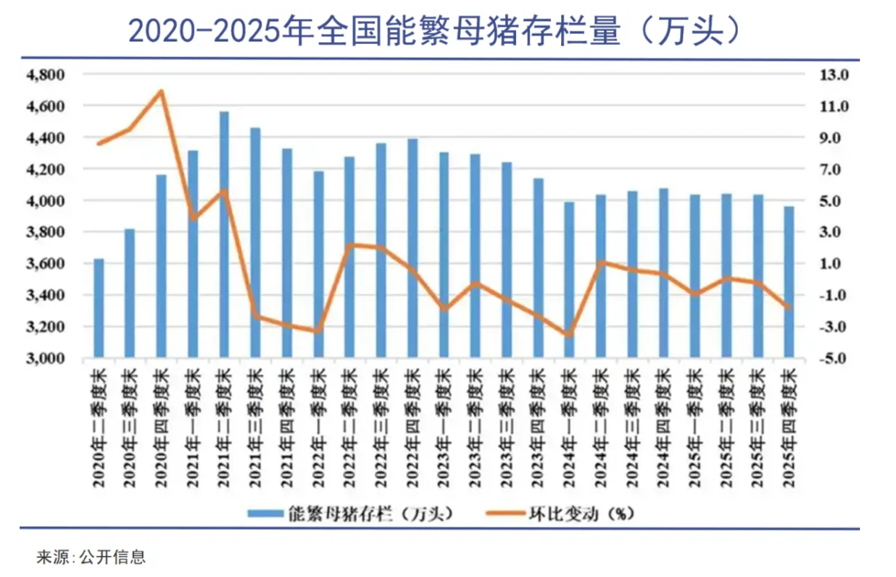

从能繁母猪到生猪价格的交叉验证
这一判断不是来自对猪价的猜测，而是基本面与技术面的交叉验证：能繁母猪去化速度不足以支撑反转，价格走势的高点逐次降低、低点持续破新低。
对于普通投资者而言，生猪市场的信息结构对散户天然不利——能繁数据、猪价走势和行业新闻，在到达我们手中之前已经经过了多层传递和解读。与其在信息劣势下做左侧预判，不如等待趋势明朗后做右侧跟随。
当前阶段，确认趋势反转的信号尚未出现。能繁母猪去化速度缓慢，出栏均重仍在128公斤以上的偏高水平，猪粮比价远低于6比1的盈亏平衡线。保持关注、等待确认，是当下更审慎的选择。
养殖户看到利润信号，开始大量补栏仔猪，扩大养殖规模。
仔猪长成能繁母猪（约4个月）→ 配种妊娠114天（约4个月）→ 仔猪育肥至出栏（约6个月）。这是生物学硬约束，无法通过技术或资本缩短。
18个月前集中补栏的生猪同时出栏，市场供给远超需求，猪价开始下跌，甚至跌破成本线。
持续亏损迫使养殖户淘汰能繁母猪、减少补栏。母猪减少后约10个月，生猪出栏量开始实质性下降。
出栏量降至低位后，供需缺口再次出现，猪价回升——一个新的循环从第一步重新开始。
今天市场上的猪肉供应量，是由大约一年半以前的养殖决策决定的。供需之间这种永恒的"迟到"关系，就是猪周期的第一性原理。
—— 经济学家 Ezekiel & Kaldor，蛛网模型（Cobweb Model），1930 年代如果猪周期的本质是供给时滞，分析它的位置就应该从供给的源头入手——能繁母猪存栏量。从能繁母猪配种到商品猪出栏，固定间隔约10个月，这使得能繁母猪成为预判未来供给方向的最可靠先行指标。
农业农村部基于这一逻辑设定了3,900万头的正常保有量目标。当前3,904万头的水平略高于目标，且去化速度远慢于历史——2023至2025年年均降幅仅3.3%，而2014至2016年环保去产能期间年均降幅达7.5%。方向正确，但速度不足以形成短期供给缺口。

5月移动均线揭示中长期趋势方向
2020年8月36.5元 → 2022年10月27.2元 → 2024年8月20.3元。三座价格峰一峰比一峰低，反映供给端的结构性压力在持续累积。
2021年9月13.5元 → 2022年3月13.1元 → 2023年6月14.7元 → 2026年3月12.0元。最近的低点已是6年来的最低水平。
均线（虚线）方向仍指向下倾，且长期处于全周期均值（点线）以下。在技术分析框架中构成标准的下降趋势定义。
基本面跟踪和技术面观察，两套完全独立的方法指向了同一个方向——这不是巧合，而是供给端的核心矛盾同时在两个维度上留下了痕迹。
—— 交叉验证的意义：独立证据链的汇合显著增强了判断的可靠性散户投资者在生猪市场中面临一个结构性不平等：真正的一手信息——大型养殖场的补栏计划、屠宰企业的收猪价格、地区的疫病传播状况——掌握在产业内部人士手中。等这些信息通过统计数据或新闻报道到达散户时，市场往往已经在消化它们了。
这种信息劣势意味着，散户在底部尚未确认、趋势尚不明朗的阶段进行提前布局，胜率天然偏低。 左侧交易的前提是拥有比市场更准确或更及时的信息来判断底部位置，而散户恰好在这一前提上处于劣势。
在底部尚未确认时提前介入。前提是拥有比市场更准确的信息来判断底部位置。散户在信息链条中处于末端，这一前提难以成立。
本质是在信息劣势下做预判——赌的是"我认为底部在哪里"。
放弃对"最低点"的预测，等待确认信号出现后再介入。能繁母猪连续3个月趋势性下降、出栏均重回落、猪粮比回升至盈亏线上方——当这些信号出现时再入场。
本质是在趋势确立后做跟随——买不到最低点，但买得到确定性。
回到当前时点的现实：确认信号尚未出现。能繁母猪去化月均不足0.5%，出栏均重128.51公斤仍在历史同期偏高水平，猪粮比价4.23远低于5比1的一级预警线。按右侧交易的逻辑，当前宜保持关注而非急于行动。
这不是消极等待，而是对信息劣势的清醒认知。在生猪市场，散户唯一的优势是——我们有耐心等到趋势明朗，而产业资本在亏损中需要承受每一天的资金成本。
每头母猪每年提供的断奶仔猪数提升了40%。这意味着同样数量的能繁母猪，可以产出40%更多的仔猪。"能繁减少 = 供给减少"的传统等式已被打破——2025年能繁同比减少117万头，猪肉产量却达到5,938万吨的历史最高水平。
TOP10企业出栏占比仅9.64%。亏损持续3至6个月即触发大面积淘汰——散户资金有限、退出成本低，去产能速度快且彻底。猪周期规律性地3至4年一轮。
历史规律：亏损 → 退出 → 供给收缩 → 价格回升。
TOP10企业出栏占比超过30%。39家百万头级猪企合计出栏2.95亿头，同比增长24.5%。巨头拥有银行授信和股市融资，在亏损中不退反进。
新常态：亏损 → 扛着不退 → 去化缓慢 → 磨底拉长。
PSY革命与集中度跃升的叠加效应，比各自单独作用更为深远。PSY(Pigs Weaned per Sow per Year)即 猪周期没有消失。但它的形态正在从"大起大落"的短波动走向"更长、更难熬"的慢调整。理解这一结构变迁，比猜测某一个月的猪价涨跌重要得多。
基本面和技术面给出了同一答案：还没有。对于缺乏一手信息的散户投资者，在等待中保持关注，比在不确定中提前押注，更接近理性的选择。